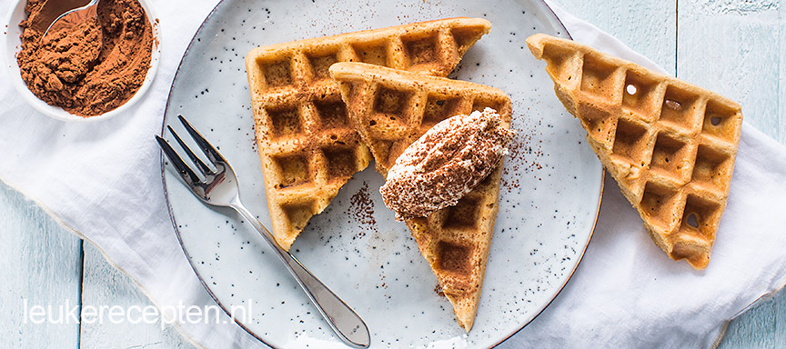

Tiramisu wafels
Wafels met koffiesmaak geserveerd met mascarpone en cacao. Lekker als toetje of gebak bij koffie of thee.
Ingrediënten
- 120 gr boter + om in te vetten
- 1 eetlepel oploskoffie
- 300 gr zelfrijzend bakmeel
- 300 ml melk
- 120 gr suiker
- 1 zakje vanillesuiker
- 2 eieren
- 250 gr mascarpone
- 1 eetlepel cacao
Bereidingswijze
- Doe de bloem in een kom en voeg de suiker, vanillesuiker, snufje zout en koffiepoeder toe en meng door elkaar.
- Maak een kuiltje in het midden en voeg de gesmolten boter, melk en eieren toe en roer met een houten lepel door elkaar.
- Verwarm het wafelijzer en vet deze in met een beetje boter of olie.
- Voeg ongeveer 2 sauslepels beslag in een wafelvorm en ook aan de andere zijde en doe dicht.
- Bak de wafels in ca. 4 a 5 minuten gaar.
- Schep wat mascarpone er op en zeef er wat cacao over.
- Bewaar de tiramisu wafels zonder topping in een afgesloten doos of trommel ca. 3 a 4 dagen.

Tip! Ook lekker met wat Amaretto eroverheen. Let op: 18+!